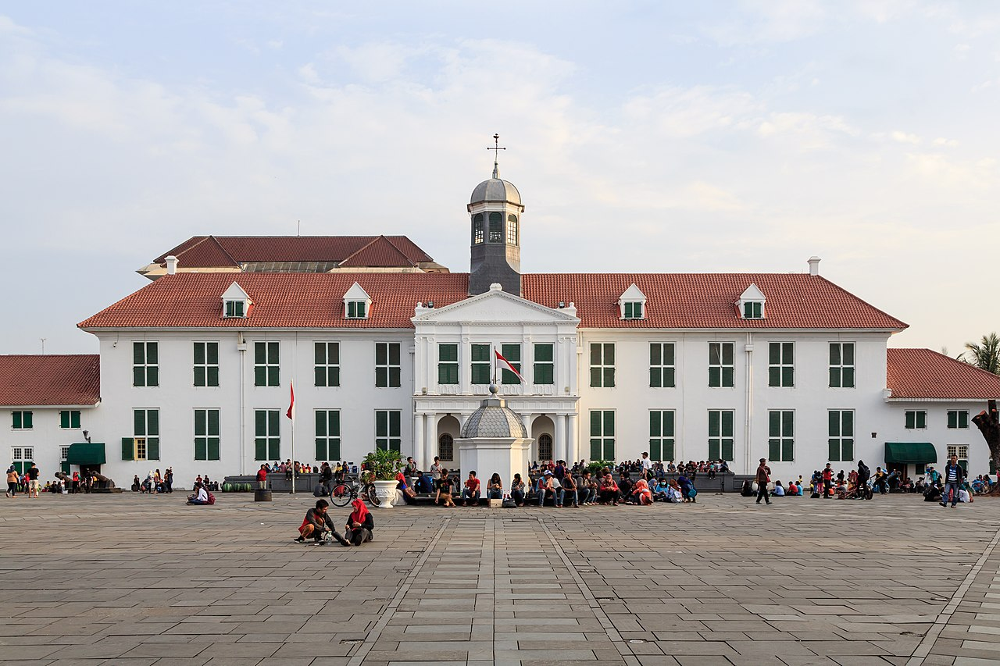

Sejarah

Jakarta bermula dari pelabuhan kecil di estuari sungai Ciliwung sekitar 500 tahun yang lalu. Lambat
laun, pelabuhan kecil ini bertransformasi menjadi pusat perdagangan internasional yang mempertemukan
ragam bangsa di dunia. Rekam jejak Jakarta bisa ditemukan melalui beberapa prasasti yang ditemukan
di sekitar pelabuhan dan sepanjang sungai Ciliwung.
Sejarah tentang Jakarta tercatat oleh para
pengembara Eropa di abad ke-16. Kala itu, Jakarta marak disebut sebagai Kalapa, yang merupakan
pelabuhan utama kerajaan Sunda. Pelabuhan yang turut menjadi pusat perniagaan Portugis kala itu
diserang oleh Pangeran Fatahillah pada 22 Juni 1527. Sejak itu, Pangeran Fatahillah mengganti nama
Sunda Kalapa menjadi Jayakarta. Tanggal penyerangan itu hingga kini diperingati sebagai HUT Kota
Jakarta.
Geografis

Jakarta berlokasi di sebelah utara Pulau
Jawa, di muara Ciliwung, Teluk Jakarta. Seluruh wilayah Jakarta terletak di dataran rendah pada
ketinggian rata-rata 8 meter dpl dengan titik tertinggi Jakarta adalah 91 meter dpl berada di
Kawasan Buperta Cibubur, Cipayung, Jakarta Timur yang merupakan ujung terendah dari formasi dataran
Jonggol-Jatiluhur. Sementara titik terendahnya yaitu -1 meter dpl dengan lokasi di wilayah Muara
Baru dan Pluit, Jakarta Utara di mana daerah tersebut mengalami fenomena penurunan tanah sejak lama.
Karena berada di dataran rendah, mengakibatkan
banyak dari wilayah Jakarta sering dilanda banjir, terlebih sebelah selatan Jakarta merupakan daerah
pegunungan dengan curah hujan tinggi. Jakarta dilewati oleh 13 sungai yang semuanya bermuara ke
Teluk Jakarta. Sungai yang terpenting ialah Ciliwung, yang membelah kota menjadi dua. Sebelah timur
dan selatan Jakarta berbatasan dengan provinsi Jawa Barat dan di sebelah barat berbatasan dengan
provinsi Banten.
Wisata
Jakarta merupakan salah satu destinasi wisata
yang cukup baik di Indonesia. Untuk meningkatkan jumlah wisatawan yang berkunjung ke Jakarta,
pemerintah mengadakan program "Enjoy Jakarta".
Taman Mini Indonesia

Taman Mini Indonesia Indah (disingkat
TMII; sebelumnya Taman Mini "Indonesia Indah" dengan tanda kutip) merupakan suatu taman hiburan
bertemakan kebudayaan Indonesia di Jakarta Timur, DKI Jakarta, yang memiliki area seluas kurang
lebih 147 hektare[1] atau 1,47 kilometer persegi. Taman ini merupakan rangkuman kebudayaan
bangsa Indonesia, yang mencakup berbagai aspek kehidupan sehari-hari masyarakat 26 provinsi
Indonesia (pada tahun 1975) yang ditampilkan dalam anjungan daerah berarsitektur tradisional,
serta menampilkan aneka busana, tarian, dan tradisi daerah.
Museum Fatahillah

Museum Fatahillah memiliki nama resmi
Museum Sejarah Jakarta adalah sebuah museum yang terletak di Jalan Taman Fatahillah Nomor 1,
Jakarta Barat, dengan luas lebih dari 1.300 meter persegi.
Bangunan ini dahulu merupakan Balai Kota Batavia (bahasa Belanda: Stadhuis van Batavia) yang
dibangun pada tahun 1707-1710 atas perintah Gubernur Jenderal Joan van Hoorn. Bangunan ini
menyerupai Istana Dam di Amsterdam, terdiri atas bangunan utama dengan dua sayap di bagian timur
dan barat serta bangunan sanding yang digunakan sebagai kantor, ruang pengadilan, dan
ruang-ruang bawah tanah yang dipakai sebagai penjara. Pada tanggal 30 Maret 1974, bangunan ini
kemudian diresmikan oleh bapak Ali Sadikin sebagai Museum Sejarah Jakarta.